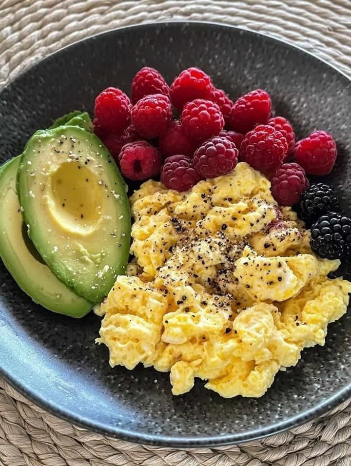

Own · direction artistique v2
Clean girl, photo first
Fond blanc, la photo porte l'émotion, le noir porte l'action. Des tons café-crème (vanilla, latte, mauve, fog) pour numéroter et classer, un seul accent cocoa pour ce qu'on veut faire remarquer.





Palette
White#FFFFFF
Mist#F5F4F1
Cocoa · accent#8A6E5A
Ink#111111
Vanilla#EFE7DD
Latte#E6D9CB
Mauve#E8DCE1
Fog#DDE3E9
Typographie
Today's rituals
Instrument Sans 700, un mot clé en cocoa par titre, jamais d'italique · interligne 1 · approche −5,5 %
Two sets of eight per leg, rest sixty seconds.
Instrument Sans 400 / 500 / 600 · interface et texte courant
Composants
2
7,000 steps4,210 so far
Strength
Quads
Balance
PhotoLumière naturelle, tons neutres, sujet seul. Plein cadre à l'ouverture, en mosaïque à l'accueil.
FormesCartes à 20–28 px, boutons pilule, encarts blancs posés sur la photo.
CouleurNoir pour agir, tons crème pour numéroter, cocoa pour l'accent. Jamais de ton crème sur un bouton.
TonUne amie qui sait. Phrases courtes, zéro culpabilité, pas d'avant / après public.